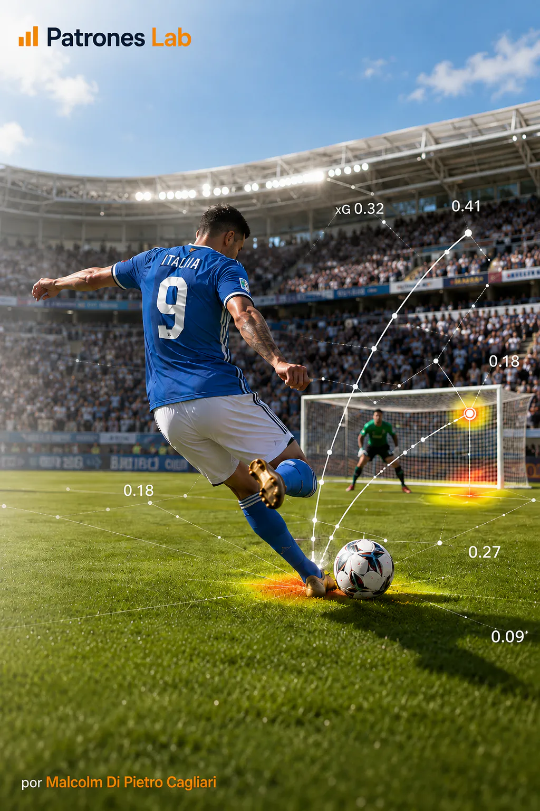

ANALYSE SPORTIVE · PROJET 07

Projet 06 · Analyse sportive
Modèle de Machine Learning · Buts attendus (xG)
Analyse de tirs enregistrés dans des compétitions de football masculin à partir des données publiques de StatsBomb. Le projet développe un modèle de Machine Learning qui estime la probabilité de but de chaque tir selon sa position et ses caractéristiques. Les prédictions permettent de mesurer la qualité de chaque tir au-delà de son résultat et d'analyser la répartition des occasions par match, équipe et joueur.
CONTEXTE ET OBJECTIF
Deux tirs peuvent avoir des résultats différents même lorsqu'ils sont effectués depuis des positions similaires. Les buts attendus (xG) (de l'anglais expected goals) permettent d'évaluer ces occasions selon leur probabilité de se transformer en but. Chaque tir reçoit une valeur comprise entre 0 et 1, estimée à partir de tirs aux caractéristiques similaires.
Le projet utilise les données de tirs de StatsBomb couvrant différentes compétitions de football masculin, avec des saisons disponibles depuis 2015. Les compétitions analysées comprennent :
- Coupes du monde : Russie 2018 et Qatar 2022.
- Tournois de sélections : Copa América 2024, Championnats d'Europe 2020 et 2024 et Coupe d'Afrique des nations 2023.
- Championnats européens : La Liga, Premier League, Serie A, Bundesliga et Ligue 1.
- Autres compétitions : Ligue des champions, Major League Soccer et Indian Super League.
L'analyse porte sur 63 482 tirs effectués pendant le temps réglementaire et les prolongations, avec des informations sur leur position, le type de tir, la partie du corps utilisée et le contexte de chaque action.
L'objectif est de construire une estimation indépendante des xG, d'évaluer ses performances sur des matchs exclus de l'entraînement et de la comparer aux probabilités publiées par StatsBomb. Les matchs de la Coupe du monde de Qatar 2022 impliquant l'Argentine, la France, la Croatie et le Maroc sont réservés à l'application du modèle sur un échantillon indépendant.
MODÈLE ET VALIDATION
PRÉPARATION DES TIRS
L'analyse part des tirs et identifie ceux qui ont abouti à un but. Elle inclut les tirs du temps réglementaire et des prolongations, y compris les penalties tirés pendant le match. La position du tir permet de calculer sa distance au centre du but et l'angle de vue entre les poteaux.
DISTANCE AU CENTRE DU BUT
d=\sqrt{(120-x)^2+(40-y)^2}
x et y indiquent la position du tir dans les coordonnées de StatsBomb. Le point (120, 40) représente le centre du but adverse. La distance résume à quelle distance du but le tir a été effectué.
Parmi les variables préparées pour le modèle figurent :
- Distance au but et angle du tir.
- Pied utilisé, technique et type d'action.
- Pression défensive et poste du joueur.
Ces variables sont converties en valeurs numériques. La distance au but a apporté la contribution la plus importante.
RÉGRESSION LOGISTIQUE ET ESTIMATION DES xG
La régression logistique combine les caractéristiques de chaque tir pour estimer sa probabilité de se transformer en but. Le modèle apprend l'influence des variables à partir de tirs dont le résultat est connu et transforme leur combinaison en une valeur comprise entre 0 et 1 à l'aide de la fonction sigmoïde. La version finale combine 12 variables pour chaque estimation.
PROBABILITÉ DE BUT ESTIMÉE
xG_i=\frac{1}{1+e^{-z_i}},\quad z_i=\beta_0+\sum_{j=1}^{12}\beta_jx_{ij}
xG(i) est la probabilité estimée pour le tir i. Chaque coefficient bêta représente le poids ajusté d'une variable ; la fonction sigmoïde transforme la combinaison de ces variables en une probabilité.
Pour évaluer les performances, les matchs sont répartis intégralement, afin que les tirs d'une même rencontre restent ensemble dans l'entraînement ou le test. Sur l'échantillon destiné au développement du modèle, environ 75 % des tirs servent à l'entraînement et les 25 % restants à l'évaluation des prédictions.
VALIDATION ET COMPARAISON AVEC STATSBOMB
L'évaluation considère deux aspects : la capacité à attribuer des valeurs plus élevées aux tirs qui deviennent des buts et la proximité entre les probabilités estimées et les résultats observés. Le jeu de test comprend 1 688 buts et le modèle cumule 1 674 buts attendus, avec des résultats proches à l'échelle agrégée.
BUTS ATTENDUS CUMULÉS
xG_{\mathrm{total}}=\sum_{i=1}^{n}xG_i
La somme des valeurs xG de tous les tirs d'un joueur, d'une équipe ou d'un match représente le total des buts attendus pour ces occasions. Il s'agit d'une espérance statistique, qui peut donc différer du nombre de buts réellement marqués.
Sur les matchs réservés de Qatar 2022, le modèle développé s'est davantage rapproché du total de buts observés. StatsBomb a obtenu de meilleurs résultats pour classer les tirs selon leur probabilité de but et pour mesurer l'erreur de ces estimations. La comparaison distingue la justesse du total cumulé de la qualité de l'estimation de chaque tir.
LIVRABLES ET ENSEIGNEMENTS
Le projet présente les probabilités par tir, les variables les plus influentes et la comparaison avec StatsBomb. Les graphiques montrent la position des tirs sur le terrain et l'évolution des buts attendus au cours du match.
Le modèle a été appliqué à la finale de la Coupe du monde de Qatar 2022 entre l'Argentine et la France pour analyser la qualité des occasions créées par chaque sélection. L'Argentine a cumulé 2,81 xG en 20 tirs et la France 1,87 xG en 10 tirs. Les deux sélections ont marqué trois buts pendant le match. La comparaison montre le rapport entre le danger créé et les buts marqués.
L'analyse du momentum xG compare, par intervalles de trois minutes, la différence de buts attendus générés par l'Argentine et la France. L'indicateur permet d'identifier quelle sélection a créé le plus de danger dans chaque intervalle et comment cette différence a évolué au fil de la rencontre.
Le modèle combine la qualité de chaque occasion avec son évolution pendant le match. Le résultat final s'interprète ainsi à la lumière des périodes les plus dangereuses de chaque sélection.